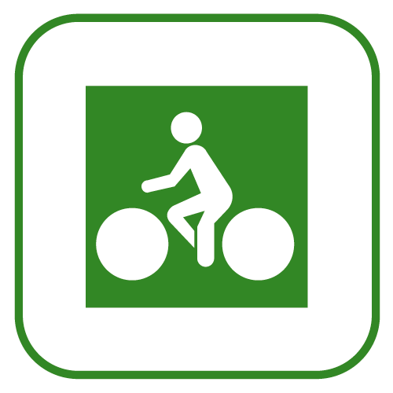

De plus en plus de villes aménagent leur territoire de pistes cyclables, voies vertes ou routes à faible circulation jalonée.
En 2020, 17 000 kms d'itinéraires aménagés existent en France.
Il y a les pistes cyclables réservées aux vélos, les voies vertes dédiées aux piétons et cyclistes, aménagées sur les chemins de halage des canaux et rivières, d'anciennes voies ferrées, des promenades littorales, des routes forestières, et aussi dans les allées de parcs urbains.
Elles offrent un cadre agréable et idéal pour les sorties en famille.

Le réseau de pistes cyclables en France
Vous trouverez sur ce site Ma voie verte la carte intéractive des voies vertes, pistes cyclables, circuits et itinéraires vélo et Velib en France.